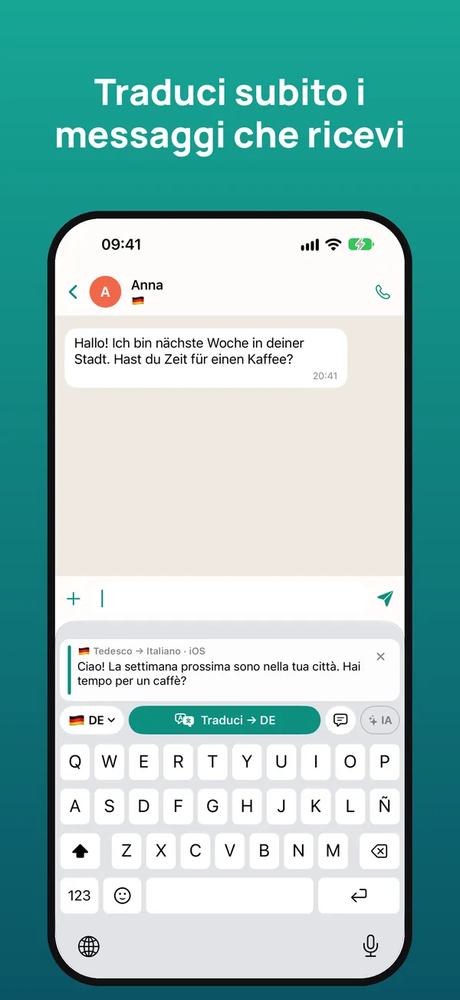
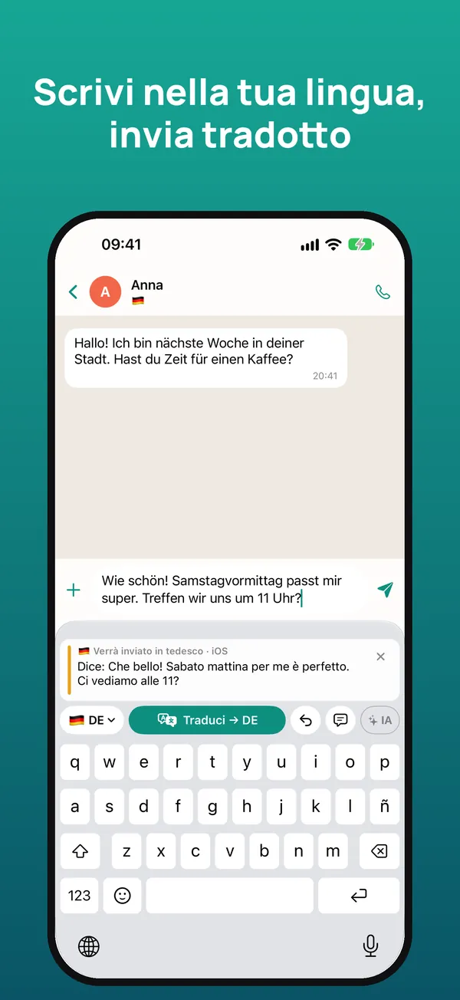
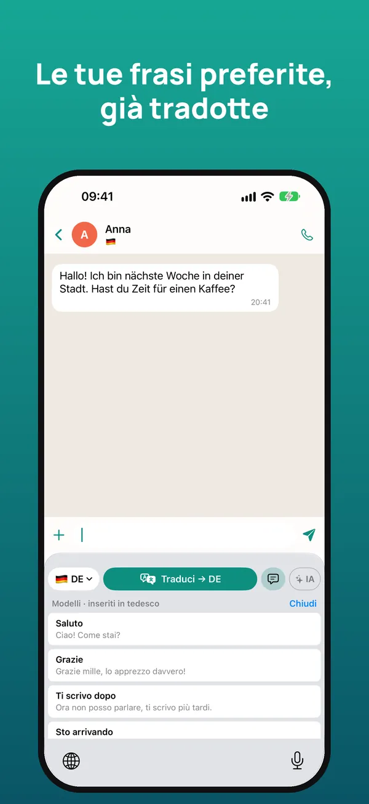
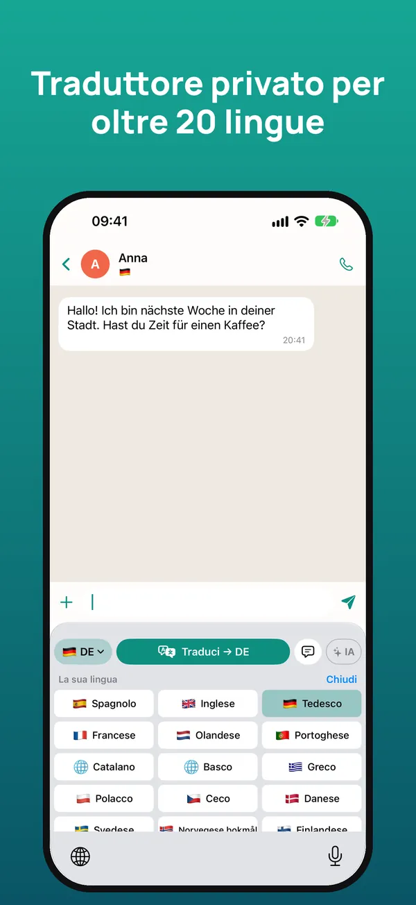

La tastiera traduttore per chattare in qualsiasi lingua
Leggi nella tua lingua ciò che ti scrivono e rispondi nella loro, direttamente in WhatsApp, Telegram, Instagram o in qualsiasi app. La traduzione avviene sul tuo iPhone.
Prova gratis per 7 giorni · iPhone con iOS 26 o successivo

Come funziona
Tieni premuto il messaggio ricevuto e tocca «Copia». La tastiera lo traduce subito nella tua lingua.
Scrivi la risposta come sempre e tocca «Traduci»: viene sostituita dalla traduzione, pronta da inviare.
Sotto vedi cosa dice il tuo messaggio nella tua lingua, per inviarlo in tutta tranquillità.



Tutto ciò che serve per parlare con chiunque
Capisci i messaggi che ricevi e rispondi nella lingua dell’altra persona.
WhatsApp, Telegram, Instagram, Messenger, email… Funziona ovunque tu possa scrivere.
Rispetta il tono e il registro di ogni lingua e tiene conto della conversazione.
Traduzione di Apple sull’iPhone: offline, senza pubblicità, senza tracciamento e senza account.
Collega la tua chiave Claude, Gemini o ChatGPT per traduzioni ancora più naturali.
Modelli inseriti già tradotti e un glossario per nomi ed espressioni, con iCloud.
Oltre 20 lingue
Italiano, inglese, spagnolo, tedesco, francese, portoghese, olandese, catalano, basco, greco, polacco, ceco, danese, svedese, norvegese, finlandese, rumeno, ungherese, ucraino, russo, turco, arabo, cinese e giapponese.
Prezzi
Scrivere con la tastiera è sempre gratis. Annulla quando vuoi dalle Impostazioni dell’iPhone.
Domande frequenti
Funziona con WhatsApp?
Sì. Funziona in qualsiasi app in cui scrivi: WhatsApp, Telegram, Instagram, Messenger, Gmail, LinkedIn e altre.
È gratis?
Hai 7 giorni gratis. Poi 2,99 € al mese o 19,99 € all’anno, oppure 39,99 € una sola volta. Scrivere con la tastiera è sempre gratis.
Perché chiede «Consenti accesso completo»?
iOS lo richiede perché la tastiera possa leggere il messaggio copiato, usare l’IA se la attivi e condividere le impostazioni con l’app. Non salva né invia ciò che scrivi.
Funziona offline?
Sì. Con la traduzione di Apple, scaricate le lingue, si traduce sull’iPhone senza connessione.
Quali lingue traduce?
Oltre 20, tra cui inglese, spagnolo, tedesco, francese, portoghese, olandese, cinese e giapponese.
Esiste una versione Android?
Per ora è disponibile solo per iPhone con iOS 26 o successivo.
Inizia in un minuto
- Installa l’app e apri la guida iniziale.
- In Impostazioni iOS → Tastiere, attiva la tastiera e «Consenti accesso completo».
- In qualsiasi chat, tieni premuto 🌐 e scegli la tastiera.
- Copia il messaggio ricevuto per leggerlo tradotto; scrivi nella tua lingua e tocca Traduci.
Serve aiuto? Scrivici a soporte@sherpastime.com.